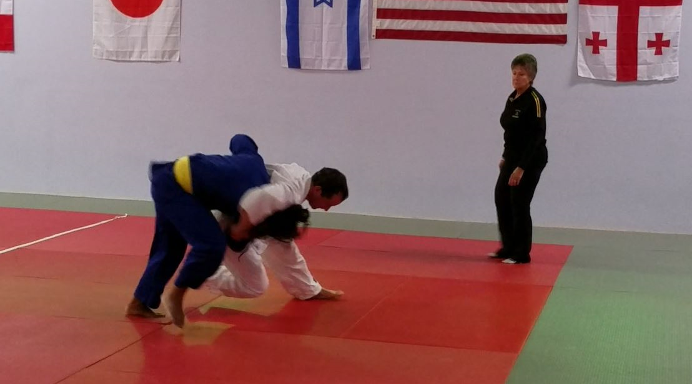

WELCOME TO MY WEBSITE

- Thank you for visiting and for taking the time to learn a little bit about Jim Cunningham. As the visitor may note, my personal history reflects a sincere pursuit of my life's vocation. I attended Penn State Berks from 1991-93 as an actuarial science major. In 1993, I transferred to Saint Charles Borromeo Seminary, Overbrook in Wynnewood, PA, in order to pursue studies for the Roman Catholic priesthood. I received my B.A. in philosophy in 1996, attended the Spirituality Year Program during 1996-97, and completed one year of graduate theological studies in 1997-98, before withdrawing from priestly formation. I was employed by Glasgow, Inc. from 1998-2005. In 2005 I enlisted in the United States Navy as a Cryptologic Technician (CTR), serving at NIOC (Navy Information Operations Command) Sugar Grove in West Virginia and onboard the USS Princeton (CG-59) homeported out of San Diego, CA. Upon receiving an honorable discharge in 2009, I returned to Penn State's University Park campus in order to complete a second undergraduate degree (in Geographic Information Science - GIS). In December 2011, I received my B.S. (With Distinction) in Geography (GIS) from Penn State's College of Earth and Mineral Sciences.
- In September 2016, I began pursuit of the Master of Science (M.S.) in Geographic Information Systems/Web Map Programming (GIS/WMP) in the University of Wisconsin-Madison's Cartography & Geographic Information Systems program.
- I have an amateur interest in astronomy, and often set up my telescopes in the lightless hills and vales of rural West Virginia.
- I am an avid volleyball player, playing competitive sixes, quads, and doubles at both league and tournament levels. I am an excellent skier (if I do say so myself). And I am a judoka (that is, one who practices Judo), so I very much enjoy throwing, grappling, arm bars, and chokes.
STV ENERGY SERVICES
STV Incorporated (January 2012 - Present)
- Since early January 2012, I have served as a GIS Specialist for STV Energy Services, a division of STV Incorporated. The primary focus of my work revolves around oil and natural gas pipeline mapping throughout the United States. The web mapping, cartography, geographic terrain/slope analysis, and database construction and management that I perform is used to aid STV engineers, natural resource managers, civil designers, and environmental planners in their efforts to continue to uphold STV's broader philosophy: "Demonstrating its committment to the energy and industrial markets by providing innovative technology designs and environmental services."
APPLIED RESEARCH LABORATORY at PENN STATE
ARL at The Pennsylvania State University Internship (May 2011 - August 2011)
- Under the direction of ARL SEALab Research Engineer Matt Quinn and ARL Research Assistant Eileen Rotthoff, I had the opportunity to spend the 2011 summer engaged in GIS research and cartographic work for various third-party ARL clients. My efforts included: digital georeferencing of scanned topographic maps, construction of cartographic products for use in ARL-developed geovisualization tools, database maintenance for CTF-74 (Yokosuka, Japan) order of battle databases, and development of Global Command and Control System (GCCS) Standard Operating Procedures for CTF-74 personnel. ARL at Penn State is a DoD-designated United States Navy University Affiliated Research Center (UARC). As such, my work as a GIS Technician Intern contributed to ARL's longstanding tradition of providing scientific and technological support for US Navy and national security interests.
ARCHDIOCESE OF PHILADELPHIA
Office for Research and Planning Internship (June 2010 - August 2010)
- In March 2010, the Archdiocese of Philadelphia's Office for Research and Planning (ORP) provided me with data for a geocoding project for GEOG 363. The success of the project led to the opportunity for a summer internship with ORP. Working directly under the supervision of ORP Director Dr. Robert Miller and Assistant Director Mr. Tom Denton, my mapping efforts included: a wall map of Our Lady of Guadalupe parish in Buckingham, PA (Bucks County), a map of the network and breadth of Catholic Social Services in the archdiocese, the geocoding of the men and women religious communities within the archdiocese, July 2010 updates to the maps/databases for archdiocesan cluster, vicariate and episcopal regions and boundaries, and a 32"x42" wall map (produced annually) of the entire Archdiocese of Philadelphia (this wall map contains and labels vicariates, clusters, territorial parishes and boundaries, personal parishes, alternate worship sites, parochial and private Catholic schools, archdiocesan high schools, and Catholic colleges/universities within the archdiocesan boundaries).
UNITED STATES NAVY
Cryptologic Technician - Collection [CTR] (June 2005 - May 2009)
- Upon completion of basic training at Recruit Training Command (Great Lakes, IL) in August 2005, I attended Cryptologic Technician-Collection (CTR) A-school at the Center for Information Dominance Corry Station (Pensacola, FL). Graduating (as Honor Graduate) from the Communications Signals Collection Processing Course in December 2005, I received orders to NIOC Sugar Grove in Sugar Grove, West Virginia. During the two-year assignment, I served as both an operator and a supervisor, performing signals analysis and research in support of the Global War on Terrorism, as well as training/mentoring junior personnel. In January 2008, I reported once more to Corry Station for C-school, graduating (again as Honor Graduate) from Maritime Cryptologic Systems for the 21st Century (MCS-21) training in shipboard signals analysis in March 2008. I then arrived onboard the USS Princeton (CG-59) in mid-deployment in the western Pacific. I completed the remainder of my military obligation aboard the Princeton, serving as Ship's Signals Exploitation Space (SSES) supervisor, Operations Departmental Yeoman, OT Division Damage Control Petty Officer, and the ship's Catholic Lay Leader. I reached the enlisted rank of Petty Officer Third Class (CTR3) in June 2006 and Petty Officer Second Class (CTR2) in June 2007. In May 2009 I was honorably discharged from naval service.